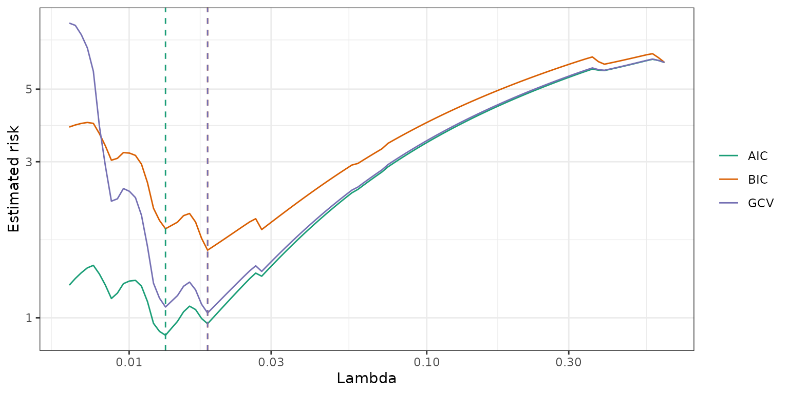

This package provides tools for fitting regularization paths for sparse group-lasso penalized learning problems. The model is fit for a sequence of the regularization parameters.
The strengths and improvements that this package offers relative to other sparse group-lasso packages are as follows:
Compiled Fortran code significantly speeds up the sparse group-lasso estimation process.
So-called “strong rules” are implemented during group wise coordinate descent steps screen out groups which are likely to be 0 at the solution.
The design matrix
Xmay be a sparse.An
estimate_risk()function may be used to evaluate the quality of fitted models via information criteria, providing a means for model selection if cross-validation is too computationally costly.Additional exponential families may be fit (though this is typically slower).
For additional details, see Liang, Cohen, Sólon Heinsfeld, Pestilli, and McDonald (2024).
Installing
You can install the released version of sparsegl from CRAN with:
install.packages("sparsegl")You can install the development version from GitHub with:
# install.packages("remotes")
remotes::install_github("dajmcdon/sparsegl")Vignettes are not included in the package by default. If you want to include vignettes, then use this modified command:
remotes::install_github(
"dajmcdon/sparsegl",
build_vignettes = TRUE,
dependencies = TRUE
)For this getting-started vignette, first, we will randomly generate
X, an input matrix of predictors of dimension
.
To create y, a real-valued vector, we use either a
- Linear Regression model: .
- Logistic regression model: , where ,
where the coefficient vector is specified as below, and the white noise follows a standard normal distribution. Then the sparse group-lasso problem is formulated as the sum of mean squared error (linear regression) or logistic loss (logistic regression) and a convex combination of the lasso penalty with an group lasso penalty:
- Linear regression:
- Logistic regression:
where
is the submatrix of with columns corresponding to the features in group .
is the corresponding coefficients of the features in group .
is the number of predictors in group .
adjusts the weight between lasso penalty and group-lasso penalty.
fine-tunes the size of penalty imposed on the model to control the number of nonzero coefficients.
library(sparsegl)
set.seed(1010)
n <- 100
p <- 200
X <- matrix(data = rnorm(n * p, mean = 0, sd = 1), nrow = n, ncol = p)
beta_star <- c(
rep(5, 5), c(5, -5, 2, 0, 0), rep(-5, 5),
c(2, -3, 8, 0, 0), rep(0, (p - 20))
)
groups <- rep(1:(p / 5), each = 5)
# Linear regression model
eps <- rnorm(n, mean = 0, sd = 1)
y <- X %*% beta_star + eps
# Logistic regression model
pr <- 1 / (1 + exp(-X %*% beta_star))
y_binary <- rbinom(n, 1, pr)
sparsegl()
Given an input matrix X, and a response vector
y, a sparse group-lasso regularized linear model is
estimated for a sequence of penalty parameter values. The penalty is
composed of lasso penalty and group lasso penalty. The other main
arguments the users might supply are:
group: a vector with consecutive integers of lengthpindicating the grouping of the features. By default, each group only contains one feature if without initialization.family: A character string specifying the likelihood to use, could be either linear regression"gaussian"or logistic regression loss"binomial". Default is"gaussian". If other exponential families are required, astats::family()object may be used (e.g. poisson()). In that case, arguments providing observation weights or offset terms are allowed as well.pf_group: Separate penalty weights can be applied to each group to allow differential shrinkage. Can be 0 for some groups, which implies no shrinkage. The default value for each entry is the square-root of the corresponding size of each group.pf_sparse: Penalty factor on -norm, a vector the same length as the total number of columns in x. Each value corresponds to one predictor Can be 0 for some predictors, which implies that predictor will be receive only the group penalty.asparse: changes the weight of lasso penalty, referring to in and above:asparse= gives the lasso penalty only.asparse= gives the group lasso penalty only. The default value ofasparseis .lower_bnd: lower bound for coefficient values, a vector in length of 1 or the number of groups including non-positive numbers only. Default value for each entry is -.upper_bnd: upper bound for coefficient values, a vector in length of 1 or the number of groups including non-negative numbers only. Default value for each entry is .
fit1 <- sparsegl(X, y, group = groups)Plotting sparsegl objects
This function displays nonzero coefficient curves for each penalty
parameter lambda values in the regularization path for a
fitted sparsegl object. The arguments of this function
are:
y_axis: can be set with either"coef"or"group". Default is"coef".x_axis: can be set with either"lambda"or"penalty". Default is"lambda".
To elaborate on these arguments:
The plot with
y_axis = "group"shows the group norms against the log-lambdaor the scaled group norm vector. Each group norm is defined by: Curves are plotted in the same color if the corresponding features are in the same group. Note that the number of curves shown on the plots may be less than the actual number of groups since only the groups containing nonzero features for at least one in the sequence are included.The plot with
y_axis = "coef"shows the estimated coefficients against thelambdaor the scaled group norm. Again, only the features with nonzero estimates for at least one value in the sequence are displayed.The plot with
x_axis = "lambda"indicates thex_axisdisplays .The plot with
x_axis = "penalty"indicates thex_axisdisplays the scaled group norm vector. Each element in this vector is defined by:
plot(fit1, y_axis = "group", x_axis = "lambda")
plot(fit1, y_axis = "coef", x_axis = "penalty", add_legend = FALSE)
cv.sparsegl()
This function performs k-fold cross-validation (cv). It takes the
same arguments X, y, group, which
are specified above, with additional argument pred.loss for
the error measure. Options are "default",
"mse", "deviance", "mae", and
"misclass". With family = "gaussian",
"default" is equivalent to "mse" and
"deviance". In general, "deviance" will give
the negative log-likelihood. The option "misclass" is only
available if family = "binomial".
fit_l1 <- cv.sparsegl(X, y, group = groups, pred.loss = "mae")
plot(fit_l1)Methods
A number of S3 methods are provided for both sparsegl
and cv.sparsegl objects.
-
coef()andpredict()return a matrix of coefficients and predictions given a matrixXat each lambda respectively. The optionalsargument may provide a specific value of (not necessarily part of the original sequence), or, in the case of acv.sparseglobject, a string specifying either"lambda.min"or"lambda.1se".
coef <- coef(fit1, s = c(0.02, 0.03))
predict(fit1, newx = X[100, ], s = fit1$lambda[2:3])
#> s1 s2
#> [1,] -4.071804 -4.091689
predict(fit_l1, newx = X[100, ], s = "lambda.1se")
#> s1
#> [1,] -15.64857
print(fit1)
#>
#> Call: sparsegl(x = X, y = y, group = groups)
#>
#> Summary of Lambda sequence:
#> lambda index nnzero active_grps
#> Max. 0.62948 1 0 0
#> 3rd Qu. 0.19676 26 20 4
#> Median 0.06443 50 19 4
#> 1st Qu. 0.02014 75 25 5
#> Min. 0.00629 100 111 23
estimate_risk()
With extremely large data sets, cross validation may be to slow for
tuning parameter selection. This function uses the degrees of freedom to
calculate various information criteria. This function uses the “unknown
variance” version of the likelihood. Only implemented for Gaussian
regression. The constant is ignored (as in
stats::extractAIC()).
object: a fittedsparseglobject.-
type: three types of penalty used for calculation:AIC (Akaike information criterion):
BIC (Bayesian information criterion):
GCV (Generalized cross validation):
where df is the degree-of-freedom, and n is the sample size.
-
approx_df: indicates if an approximation to the correct degree-of-freedom at each penalty parameter should used. Default isFALSEand the program will compute an unbiased estimate of the exact degree-of-freedom.
The df component of a sparsegl object is an
approximation (albeit a fairly accurate one) to the actual
degrees-of-freedom. However, computing the exact value requires
inverting a portion of
.
So this computation may take some time (the default computes the exact
df). For more details about how this formula, see Vaiter, Deledalle,
Peyré, et al., (2012).
risk <- estimate_risk(fit1, X, approx_df = FALSE)
References
Liang, X., Cohen, A., Sólon Heinsfeld, A., Pestilli, F., and
McDonald, D.J. 2024. “sparsegl: An R Package for Estimating
Sparse Group Lasso.” Journal of Statistical Software 110(6),
1–23. https://doi.org/10.18637/jss.v110.i06.
Vaiter S, Deledalle C, Peyré G, Fadili J, and Dossal C. 2012. “The Degrees of Freedom of the Group Lasso for a General Design.” https://arxiv.org/abs/1212.6478.